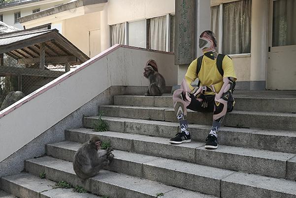

Front End Developer & Designer based in Wellington, NZ
Previously, I was a Graphic Design intern at NOSIGNER in Japan. Helping the designers with projects and mockups.
~ Before that, I was teaching English deep in the countryside of Japan. Bit of a change.. I know, but I'm willing to learn. ~
Now I'm looking for a developer role to jump into, grow my skills and be a part of something bigger. Check out my source code
here
Flick me an email or you can find me here:
LinkedIn,
GitHub
About me? I listen to angsty rap and drink black coffee. I dabble in anime, and I can speak a little Japanese.
This website was designed & developed with love by me.

Stash was an app prototype made during an internship for a business accelerator program.
My role was to collaborate with a team to design the brand identity for the company and the prototyping
process for their mobile application.
Front end prototyping / Wireframing / UX / Logo design
Trivul was a project that looked at creating an experience for tourists organising their trip in New Zealand.
View the live site here
HTML / CSS / JavaScript / GitHub / Gulp / Mapbox
Vinyl was a web app prototype developed for an existing bar/restaurant. The task was to improve customer engagement
by providing table ordering via digital devices.
View the live site here - Ipad sized devices only
HTML / CSS / JavaScript / GitHub
The Nightmarket was a website developed for an event in Wellington City. The task was to create a one page website
that promotes space and generates engagement. Responsive to all devices. This was my first experience of working together
with people, an equally challenging yet exciting process.
View the live site here.
Agile / HTML / CSS / JavaScript / GitHub
For this project I had to implement the use of the Behance API to display users profiles and profile information
in a visual yet informative way. This was a group project and my first experience working with API's.
HTML / CSS / JavaScript / NPM / GitHub